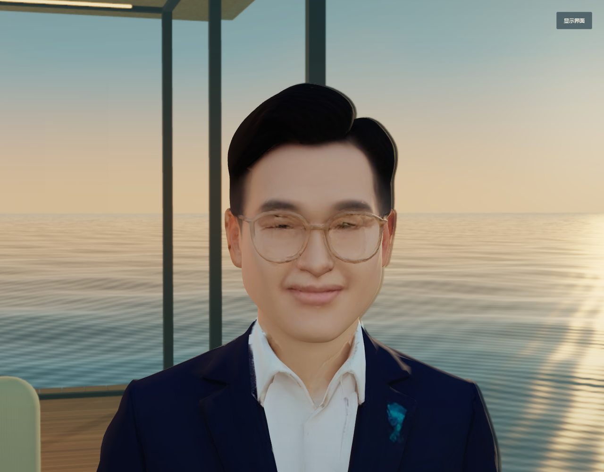
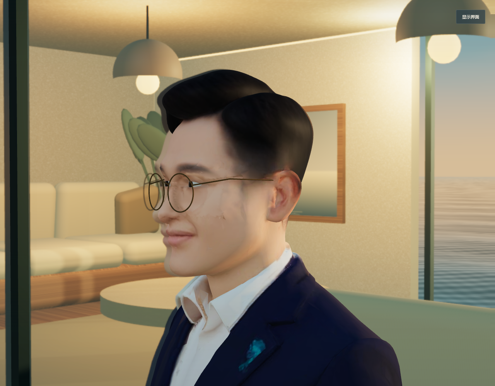
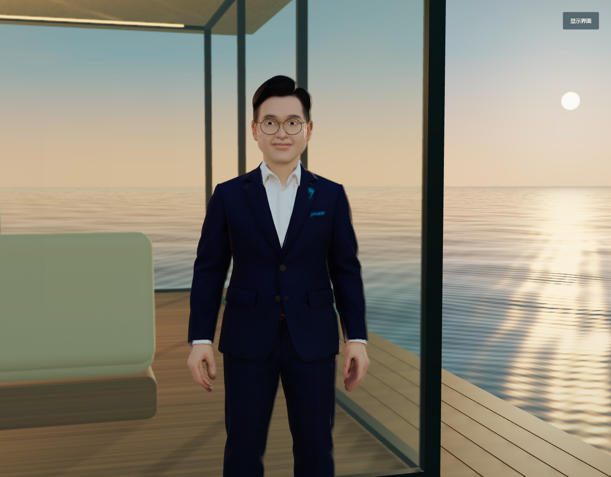

先让眼睛与眼镜，长在脸上。
3.4 静态检查稿 · 整体人物尚未通过视觉验收这轮集中重建眼眶与镜框，保留你提供的 0597 人物的脸型、头发和深蓝西装。下面是实际网页截图：同一站姿、同一光照、对应机位，没有另外生成效果图。
固定站姿，直接比较

侧面贴合与露台上的整体比例


本轮改动：移除眼周融合的旧镜框，重接皮肤边界；眼球、虹膜与镜框分别建模，镜腿接回镜圈，并修整旧模型留下的局部凹槽。
仍然有差距：眼神偏僵，眼角与脸侧仍有生成和修补痕迹，皮肤细节不足。衣领、胸前图案、双手与服装变形也未完成；这轮没有把它们列为已修好。
只检视静态画面，没有新增动作、表情或换装。双手与身体使用当前默认版本，未混入上一轮的手部候选。原始 GLB、默认人物与上一轮候选均保留；默认演示继续使用原版本。
点击截图或上方入口可进入实际 3D 页面，初始保持静止，拖动可换角度。保留的五段动作不代表本轮完成了动作美术验收。